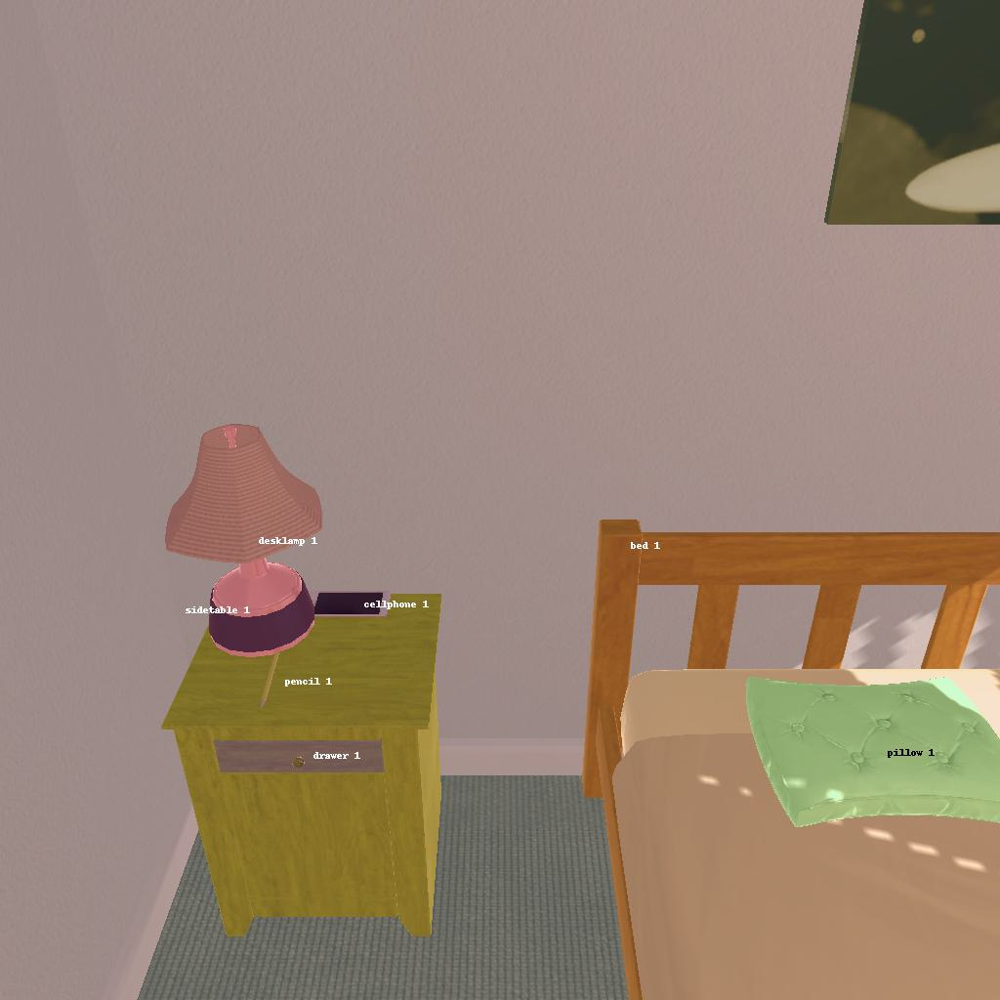

---------------------------------------------------------task: 0---------------------------------------------------------
--------------------------------------------------------------------------------------------------------------------------------------------------------------------
--------------------------------------------------------------------------------------------------------------------------------------------------------------------
Step:--------------------------------------------------------------------------2-------------------------------------------------------------------------------
----------------------------------------
VLM Prompt:
Image1:
**Instruction**
1. Analyze the provided image to identify all visible household objects, focusing on those relevant to the task description "look at alarmclock under the desklamp."
2. Use the analysis of the image and the task hint "The agent must find an object of the desired type, locate and turn on a light source with the desired object in-hand." to answer the question: what is the most reasonable action in the choices for the task description "look at alarmclock under the desklamp"?
4. Decide and write the answer using the template: The answer is: (i): , where i is the real number. If there is no desired object in the image, search every place based on **Initial Observation** to find the object. And if no one is exactly correct, choose a similar answer.
**Initial Observation**
You are in the middle of a room. Looking quickly around you, you can see bed (1), sidetable (1), drawer (1-11), dresser (1), safe (1), laundryhamper (1), garbagecan (1)
**Answer Choices**
(1): go to bed 1
(2): go to dresser 1
(3): go to drawer 2
(4): go to drawer 3
(5): go to drawer 4
(6): go to drawer 5
(7): go to drawer 6
(8): go to drawer 7
(9): go to drawer 8
(10): go to drawer 9
(11): go to drawer 10
(12): go to drawer 11
(13): go to safe 1
(14): go to laundryhamper 1
(15): go to garbagecan 1
(16): open drawer 1
(17): close drawer 1
(18): examine drawer 1
**Answer**
Let's think step by step by following the instructions.
----------------------------------------
----------------------------------------
Original Response:
The task description is to "look at alarmclock under the desklamp." In the image provided, we can see a desklamp labeled "desklamp 1" on the sidetable labeled "sidetable 1." There is no alarm clock visible in the image. According to the initial observation, there are several drawers, a dresser, a safe, a laundry hamper, and a garbage can that have not been searched yet.
Considering the task hint that the agent must find an object of the desired type and locate and turn on a light source with the desired object in-hand, the most reasonable action would be to search for the alarm clock in places where it is likely to be stored or kept when not in use.
Given that the alarm clock is not visible in the image, we should search every place based on the initial observation to find the object. The most common place to keep an alarm clock when not in use would be in a drawer near the bed. Therefore, the most reasonable action would be to start searching the drawers.
The answer is: (16): open drawer 1
----------------------------------------
----------------------------------------
>>> Refine Original VLM Response and Get Pure Action: open drawer 1
----------------------------------------
-----------------------------------------------------------------
Running time: 58.31156516075134 seconds
Total Money: 0.05369
-----------------------------------------------------------------
-----------------------------------------------------------------
Text Observation:You open the drawer 1. The drawer 1 is open. In it, you see a pillow 1, a desklamp 1, a cellphone 1, and a pencil 1.
-----------------------------------------------------------------
UNSUCCEED